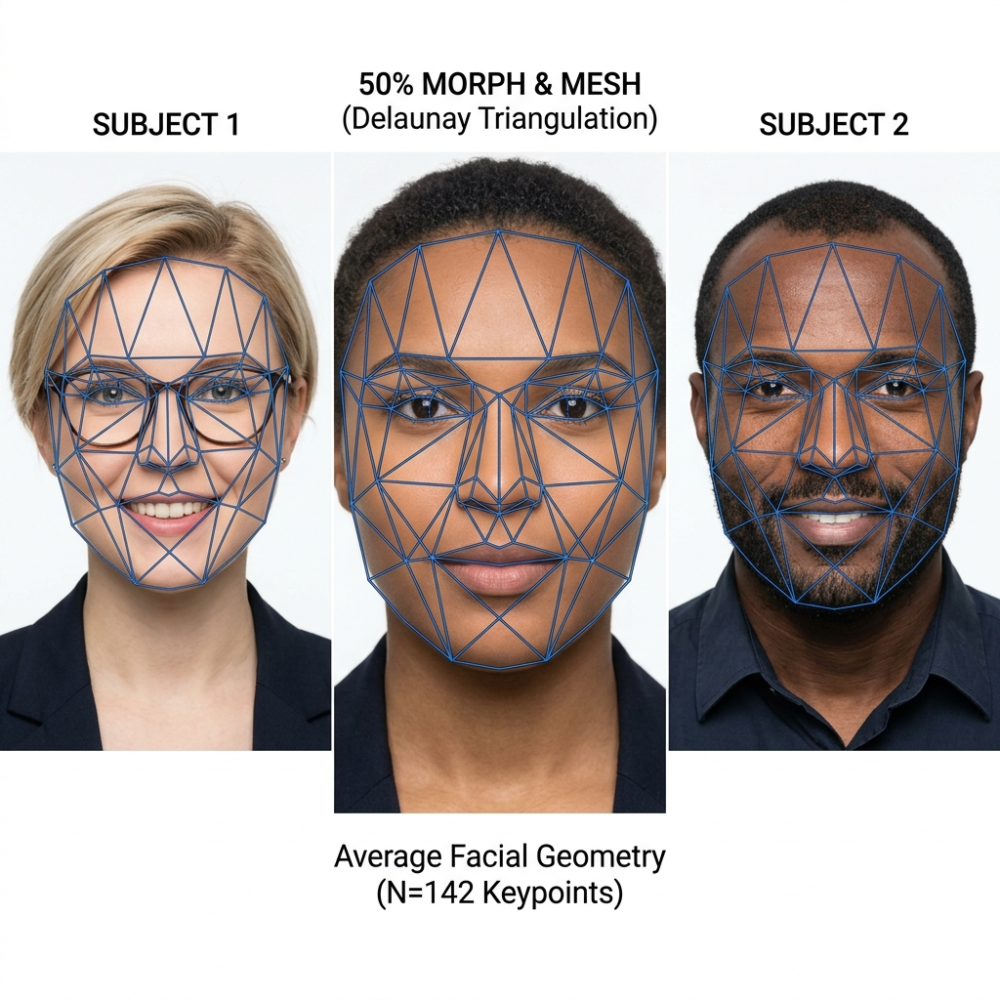
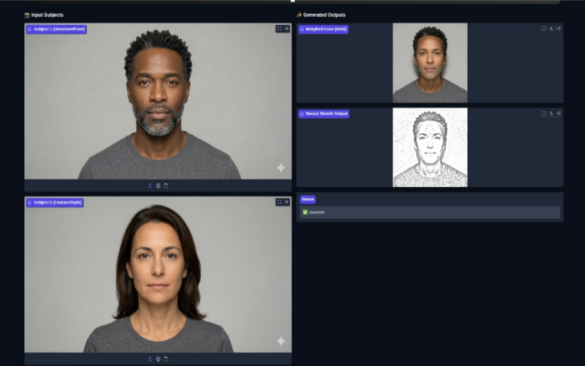
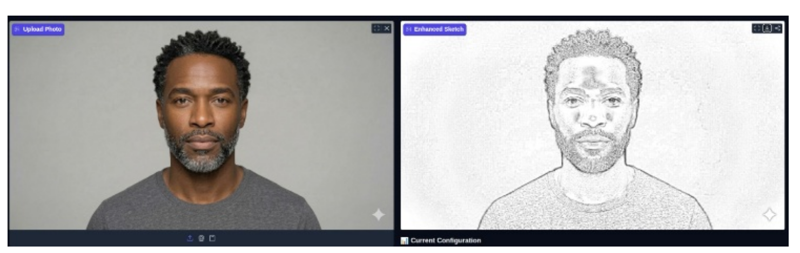

Hyper-realistic facial sketch generation using a hybrid PS-Style GAN and CV2 model — preserving identity while delivering artistic beauty.
Most modern filters face significant edge degradation and identity loss during stylization. PS-Style GAN fixes this — combining a CV2-guided Hybrid Model with controlled noise injection to extract semantic facial features, preserve structural identity, and generate high-quality sketches fast.
In light of the recent growth of AI-powered face filters, facial entertainment has seen a significant spike in user engagement. The basic problem identified in most modern filters is that they generate sketches with high latency and low identity preservation. Traditional Gaussian and Inverse Filtering often fail due to a lack of semantic understanding, while pure GAN approaches frequently suffer from structure loss. To tackle this, we use PS Style GAN and CV2 Hybrid Model which produces better quality images with high resemblance in a shorter period of time. PS-Style GAN bridges this gap using structural edge guidance and controlled latent space injection to retain originality. Applications include social media, digital art, personalized merchandise, and a face morphing feature that blends two people's faces.
The framework integrates classical computer vision techniques with deep generative modeling — transforming facial photographs into stylized pencil sketches while preserving structural identity.
The hybrid approach combines deterministic edge-based features from OpenCV with semantic facial embeddings learned using a deep generative network. The result is a sketch that's both geometrically accurate and artistically expressive.
Achieves structural consistency by extracting prominent identity markers — eyes, symmetry, jawline — through the entire synthesis cycle.
Combining CV2 and GAN allows for an optimized inference pipeline, producing results significantly faster than diffusion-based heavy models.
Performs smooth latent interpolation between identities using Delaunay mesh warping and 93-point geometric control grids.
Ensures edge-guided synthesis by injecting structured noise that preserves spatial layout while generating artistic pencil textures.
Implementing multi-scale preservation allows the network to retain spatial data from the encoder for high-fidelity edges.
Extracts high-frequency facial contours using OpenCV to provide deterministic edge-guided structure for the generative pipeline.
Combines GAN-generated textures with classical edge maps using weighted fusion for adaptive fusion balance and identity retention.
Structured training pipeline with feature-aligned loss ensures stability, convergence, and feature-aligned learning quality.
Designed for real-time engagement in social media, digital art, gaming avatars, and personalized merchandise with high identity retention.
End-to-end algorithm from raw face images to final hybrid neural sketch.
// PS-Style GAN · Hybrid Facial Sketch Algorithm // Input: Face images I1, I2 · Morph factor α · Blend weight β // Output: Final neural sketch S Step 1: Preprocessing Resize I1, I2 → 256×256 Normalize pixel values to [0, 1] Step 2: Landmark Detection // ensures geometric alignment Detect 68 facial landmarks using dlib Apply upsampling if face detection fails Step 3: Anchor Point Generation Add 9 hair points + 16 boundary points Total control points = 93 per image Step 4: Face Morphing pm = (1 − α) · pts1 + α · pts2 Delaunay triangulation → affine warp → blend → morphed face M Step 5: Classical Sketch (CV2) M → grayscale → Gaussian blur → dodge division → edge sharpening Step 6: GAN-Based Refinement // preserves high-frequency details Extract features via frozen VGG19 encoder Decode with skip connections → GAN sketch Step 7: Hybrid Fusion // balances texture vs structure S = GAN × β + CV2 × (1 − β) return Final sketch image S
Evaluated across multiple facial inputs for quality, identity preservation, and morphing coherence.



The hybrid architecture outperforms standalone methods by leveraging the geometric reliability of CV2 and the semantic richness of GANs. This tradeoff ensures that while artistic texture is added, the underlying facial structure remains consistent with the source identity. Identity preservation is maintained through skip-connection data flow and precise mesh-based warping.
Real-time deployment for mobile AR, multi-style sketching (charcoal, oil, ink), and adaptive fusion tuning for varied lighting conditions.